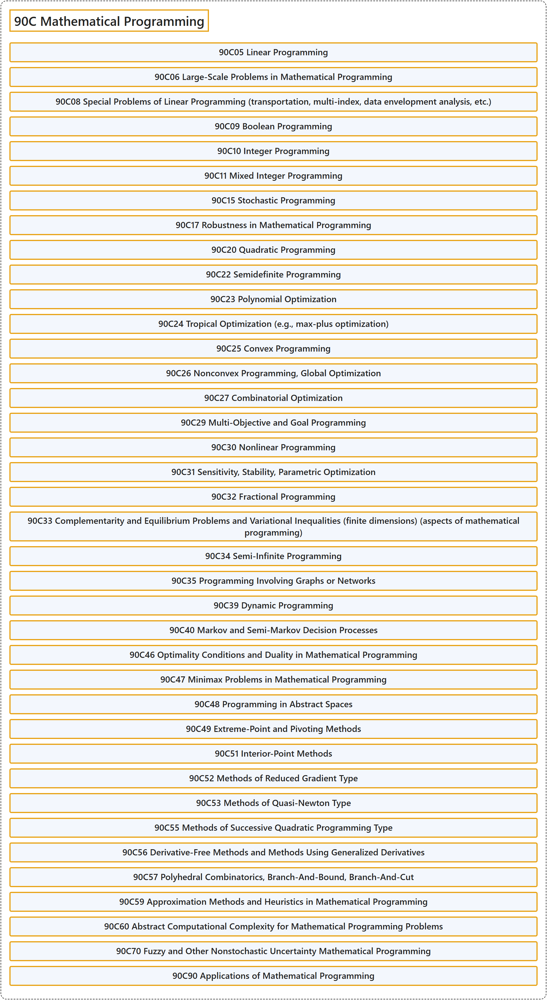

90C Mathematical Programming
Classification

Glossary
| Term | Definition | 中文翻译 | Source |
|---|---|---|---|
| 90C Mathematical Programming 数学规划 |
(No definition) | （无定义） | Associate Editors of Mathematical Reviews and zbMATH, 2020 |
| 90C05 Linear Programming 线性规划 |
(No definition) | （无定义） | Associate Editors of Mathematical Reviews and zbMATH, 2020 |
| 90C06 Large-Scale Problems in Mathematical Programming 数学规划中的大规模问题 |
(No definition) | （无定义） | Associate Editors of Mathematical Reviews and zbMATH, 2020 |
| 90C08 Special Problems of Linear Programming (transportation, multi-index, data envelopment analysis, etc.) 线性规划的特殊问题（运输、多指标、数据包络分析等） |
(No definition) | （无定义） | Associate Editors of Mathematical Reviews and zbMATH, 2020 |
| 90C09 Boolean Programming 布尔规划 |
(No definition) | （无定义） | Associate Editors of Mathematical Reviews and zbMATH, 2020 |
| 90C10 Integer Programming 整数规划 |
(No definition) | （无定义） | Associate Editors of Mathematical Reviews and zbMATH, 2020 |
| 90C11 Mixed Integer Programming 混合整数规划 |
(No definition) | （无定义） | Associate Editors of Mathematical Reviews and zbMATH, 2020 |
| 90C15 Stochastic Programming 随机规划 |
(No definition) | （无定义） | Associate Editors of Mathematical Reviews and zbMATH, 2020 |
| 90C17 Robustness in Mathematical Programming 数学规划中的鲁棒性 |
(No definition) | （无定义） | Associate Editors of Mathematical Reviews and zbMATH, 2020 |
| 90C20 Quadratic Programming 二次规划 |
(No definition) | （无定义） | Associate Editors of Mathematical Reviews and zbMATH, 2020 |
| 90C22 Semidefinite Programming 半定规划 |
(No definition) | （无定义） | Associate Editors of Mathematical Reviews and zbMATH, 2020 |
| 90C23 Polynomial Optimization 多项式优化 |
(No definition) | （无定义） | Associate Editors of Mathematical Reviews and zbMATH, 2020 |
| 90C24 Tropical Optimization (e.g., max-plus optimization) 热带优化（如极大加优化） |
(No definition) | （无定义） | Associate Editors of Mathematical Reviews and zbMATH, 2020 |
| 90C25 Convex Programming 凸规划 |
(No definition) | （无定义） | Associate Editors of Mathematical Reviews and zbMATH, 2020 |
| 90C26 Nonconvex Programming, Global Optimization 非凸规划、全局优化 |
(No definition) | （无定义） | Associate Editors of Mathematical Reviews and zbMATH, 2020 |
| 90C27 Combinatorial Optimization 组合优化 |
(No definition) | （无定义） | Associate Editors of Mathematical Reviews and zbMATH, 2020 |
| 90C29 Multi-Objective and Goal Programming 多目标规划与目标规划 |
(No definition) | （无定义） | Associate Editors of Mathematical Reviews and zbMATH, 2020 |
| 90C30 Nonlinear Programming 非线性规划 |
(No definition) | （无定义） | Associate Editors of Mathematical Reviews and zbMATH, 2020 |
| 90C31 Sensitivity, Stability, Parametric Optimization 灵敏度、稳定性、参数优化 |
(No definition) | （无定义） | Associate Editors of Mathematical Reviews and zbMATH, 2020 |
| 90C32 Fractional Programming 分式规划 |
(No definition) | （无定义） | Associate Editors of Mathematical Reviews and zbMATH, 2020 |
| 90C33 Complementarity and Equilibrium Problems and Variational Inequalities (finite dimensions) (aspects of mathematical programming) 互补与均衡问题及变分不等式（有限维）（数学规划方面） |
(No definition) | （无定义） | Associate Editors of Mathematical Reviews and zbMATH, 2020 |
| 90C34 Semi-Infinite Programming 半无限规划 |
(No definition) | （无定义） | Associate Editors of Mathematical Reviews and zbMATH, 2020 |
| 90C35 Programming Involving Graphs or Networks 涉及图或网络的规划 |
(No definition) | （无定义） | Associate Editors of Mathematical Reviews and zbMATH, 2020 |
| 90C39 Dynamic Programming 动态规划 |
(No definition) | （无定义） | Associate Editors of Mathematical Reviews and zbMATH, 2020 |
| 90C40 Markov and Semi-Markov Decision Processes 马尔可夫与半马尔可夫决策过程 |
(No definition) | （无定义） | Associate Editors of Mathematical Reviews and zbMATH, 2020 |
| 90C46 Optimality Conditions and Duality in Mathematical Programming 数学规划中的最优性条件与对偶 |
(No definition) | （无定义） | Associate Editors of Mathematical Reviews and zbMATH, 2020 |
| 90C47 Minimax Problems in Mathematical Programming 数学规划中的极小极大问题 |
(No definition) | （无定义） | Associate Editors of Mathematical Reviews and zbMATH, 2020 |
| 90C48 Programming in Abstract Spaces 抽象空间中的规划 |
(No definition) | （无定义） | Associate Editors of Mathematical Reviews and zbMATH, 2020 |
| 90C49 Extreme-Point and Pivoting Methods 极点方法与枢轴方法 |
(No definition) | （无定义） | Associate Editors of Mathematical Reviews and zbMATH, 2020 |
| 90C51 Interior-Point Methods 内点法 |
(No definition) | （无定义） | Associate Editors of Mathematical Reviews and zbMATH, 2020 |
| 90C52 Methods of Reduced Gradient Type 约化梯度型方法 |
(No definition) | （无定义） | Associate Editors of Mathematical Reviews and zbMATH, 2020 |
| 90C53 Methods of Quasi-Newton Type 拟牛顿型方法 |
(No definition) | （无定义） | Associate Editors of Mathematical Reviews and zbMATH, 2020 |
| 90C55 Methods of Successive Quadratic Programming Type 逐次二次规划型方法 |
(No definition) | （无定义） | Associate Editors of Mathematical Reviews and zbMATH, 2020 |
| 90C56 Derivative-Free Methods and Methods Using Generalized Derivatives 无导数方法与使用广义导数的方法 |
(No definition) | （无定义） | Associate Editors of Mathematical Reviews and zbMATH, 2020 |
| 90C57 Polyhedral Combinatorics, Branch-And-Bound, Branch-And-Cut 多面体组合学、分支定界、分支切割 |
(No definition) | （无定义） | Associate Editors of Mathematical Reviews and zbMATH, 2020 |
| 90C59 Approximation Methods and Heuristics in Mathematical Programming 数学规划中的逼近方法与启发式方法 |
(No definition) | （无定义） | Associate Editors of Mathematical Reviews and zbMATH, 2020 |
| 90C60 Abstract Computational Complexity for Mathematical Programming Problems 数学规划问题的抽象计算复杂度 |
(No definition) | （无定义） | Associate Editors of Mathematical Reviews and zbMATH, 2020 |
| 90C70 Fuzzy and Other Nonstochastic Uncertainty Mathematical Programming 模糊及其他非随机不确定性数学规划 |
(No definition) | （无定义） | Associate Editors of Mathematical Reviews and zbMATH, 2020 |
| 90C90 Applications of Mathematical Programming 数学规划的应用 |
(No definition) | （无定义） | Associate Editors of Mathematical Reviews and zbMATH, 2020 |
References
Associate Editors of Mathematical Reviews and zbMATH. (2020). MSC2020: Mathematics Subject Classification system. Retrieved October 27, 2026, from https://msc2020.org/